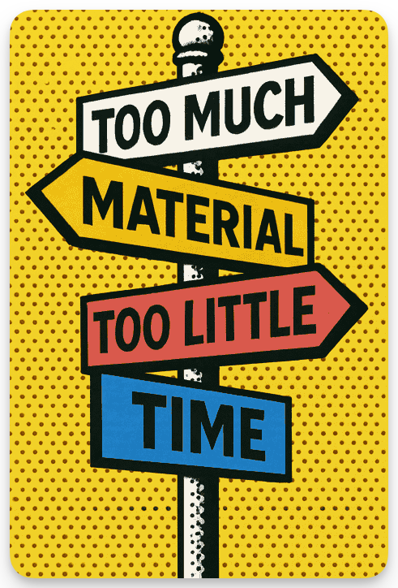
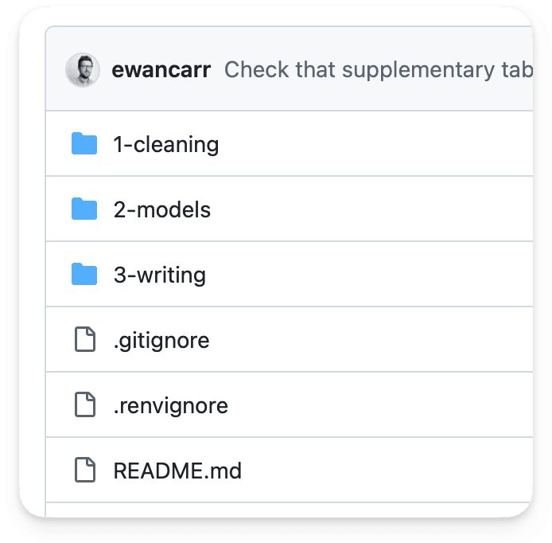
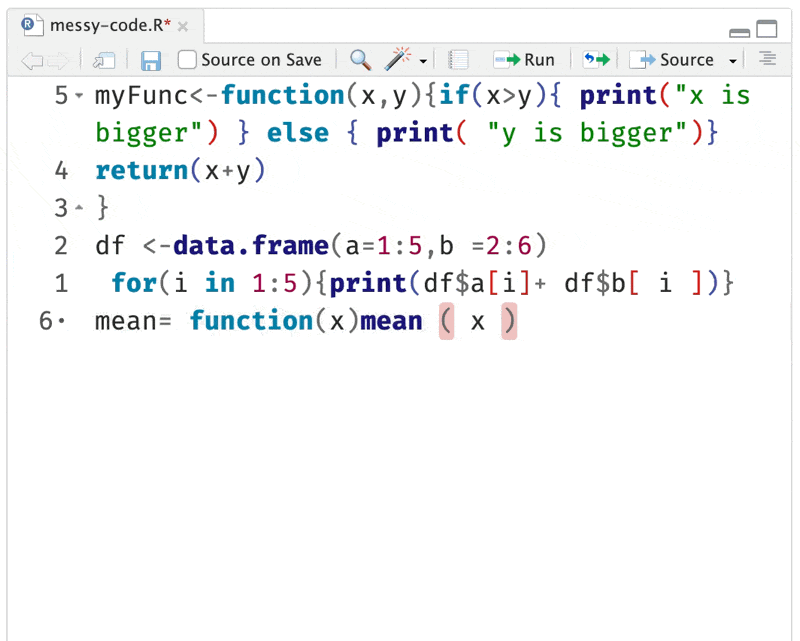
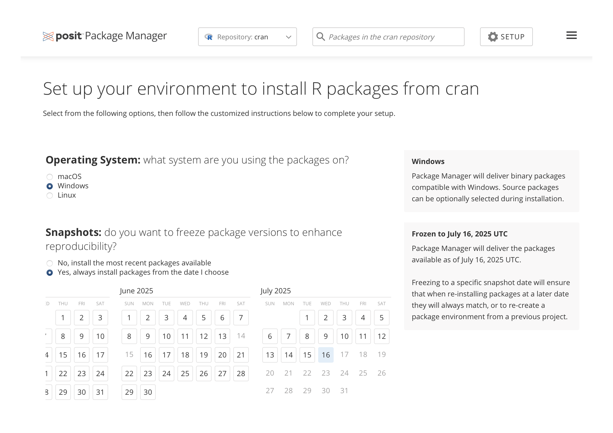
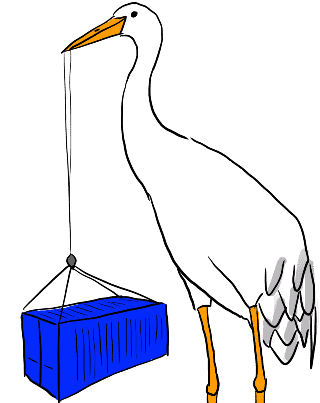
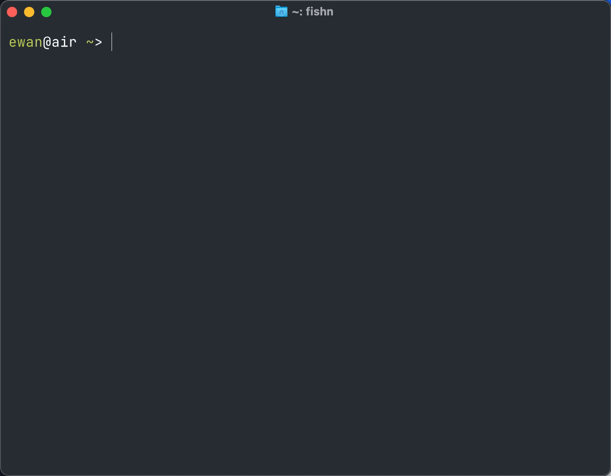
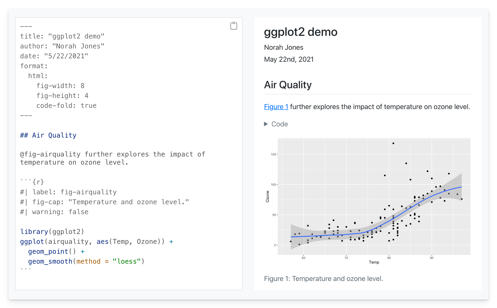

library(here)
data <- read_csv(
here("data", "raw", "messy-data.csv")
)Reproducible workflows in R
King’s Open Research Summer School
Dr Ewan Carr
![]()
Department of Biostatistics & Health Informatics
King’s College London
July 25, 2025
üñºÔ∏è
My aim is to surface key tools and habits — you’ll need to explore further on your own.
Reproducibility is necessary for open science, but not sufficient. Broader change in motivations, incentives, and culture is essential.
- Reset academic publishing models.
- Reward high quality team science regardless of null findings.
- Stop chasing small, noisy effects in tiny samples.
“Research can be open and reproducible and still completely and obviously wrong.”
Richard McElreath
This talk
- Code and data hygiene
- Version control with Git
- Managing your environment
- Workflow automation
- Wrap-up

ü´£
Not doing horrible things with your data or code
üߺ Data hygiene
- Keep raw and processed separate
- Never edit raw data; automate instead.
- Avoid
final_final_v3.csv
- Avoid
- Set raw data as read only
- Version your data
- e.g.,
data/raw/YYYY-MM-DD
- e.g.,
- Back up regularly; test your backups.
üóÇÔ∏è Consistent project layout
├── data
│ ├── raw
│ └── clean
├── 1-cleaning
├── 2-analysis
│ ├── a-descriptives
│ ├── b-models
│ └── c-processing
├── 3-figures
├── 4-writing
└── README.txt
Use relative file paths
setwd() is banned
üß® Absolute file paths are brittle.
üéí Relative file paths are portable.
Use here for relative paths
Set a project root (i.e., a top-level directory) from:
- An RStudio project
- A Git repository
- Manually (with a
.herefile)
Then, construct relative paths with here():
This works well with RStudio projects.
üßπ Write clean, organised code
Write modular code; break tasks into functions or scripts (e.g., scripts cleaning, analysis, visualisation).
Follow a style guide1 and use a code formatter2.
Document with inline comments and
README.mdfiles.Use consistent file and variable naming conventions (e.g.,
snake_case).
The Air code formatter1

üîÅ
Version control
Use git.
How does it work?
Initialise the repository:
Then on GitHub, create a new repository and connect the remote repository to your local one:
Push your changes to GitHub
Then, repeat:
- 1
- Add recent changes
- 2
- ‘Commit’ them to the local repository
- 3
- ‘Push’ them to GitHub

Getting started
Create an account on GitHub.com
Download GitHub Desktop
Add some files. Press buttons, break things.
KEEP BACKUPS
Include a README.md file
A good README.md helps others (and your future self) understand your project.
- What and who is the project for?
- Describe the folder structure and key files.
- Step-by-step instructions, including software dependencies and steps to reproduce.
What to learn next?
-
üìÑ Using
.gitignoreeffectively - ✍️ Writing good commit messages
- üåø Branching and pull requests
- ü§ù Collaborating in real-world projects
- ⚔️ Handling merge conflicts
- üîÑ Continuous integration (e.g., GitHub Actions)
- üß™ Automated testing
üì¶
Environment control
Your entire environment should be easily reproducible
We need a way of capturing the state of your computing environment, such that you or others can recreate it later.
- Software (e.g., R, Python, command line tools)
- R packages
- Operating system
How?
Use a dated CRAN repository
renv
renv is an R package to manage and reproduce the exact package versions used in a project.
Setting up renv
renv is an R package. So first, install the package (once):
Save the current state:
Then share renv.lock with collaborator (via Git).
Restoring from a renv lockfile
When re-initialising a project (e.g., on a new computer, or as a collaborator):
- Compares the lockfile to the current project library.
- Installs any missing or mismatched packages.
R packages are just one part of
your computing environment.
Containers
Containers package your entire computing environment so it runs consistently everywhere.
This typically involves Docker or Singularity.
Your computer
Docker
A container
Where do containers come from?
- Build them yourself.
- Download a container made by someone else.

Docker example
ü§ñ
Workflow automation
Level 1: source()
Create a script that runs your other scripts:
- A good start that supports basic automation.
- Simplistic; runs everything unconditionally, no awareness of dependencies, scales poorly.
Level 2: Make
Make is a tool that runs only the parts of your code that need updating, based on what’s changed.
Makefile
- 1
-
Declares target (
clean.csv) with dependencies (raw.csv,cleaning.R). If either change, the code is run. - 2
-
Declares another target (
plot.png), with two dependencies (clean.csv,analysis.R).
Once you’ve defined your Makefile, you can then run:
to re-run all necessary preceding steps.
Level 3: targets
targetsis an R package for building reproducible workflows by tracking and running R functions instead of files.Like Make, but it works at the level of R objects and code, not just scripts and outputs.
Use Quarto to automate reporting
Wrapping up
Phew, that was a lot.
- üå± Start small, build incrementally.
- ü§ù Talk to colleagues about how they organise their code; establish shared practices.
- üåÄ Use version control early ‚Äî it saves time (and headaches) later.
- ü߆ Tools help ‚Äî but culture and communication are key.
If you read one thing…
Comprehensibility of research
This is not transparency nor openness. What I mean is research has sufficient documentation and justification to reduce error and empower others to make up their own minds about its value. Research should be intelligible. Access is not sufficient. Research can be replicable without being reasonable or correct. Materials and data can be open without being intelligible, and they can be partly closed while still being comprehensible.
Thank you for listening.
Slides and practical materials